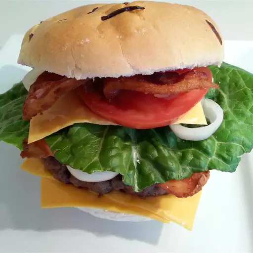

Juicy Hamburger

Description
No more dry, lackluster hamburgers. These are juicy, and spices can be easily added or changed to suit anyone's taste. If you find the meat mixture too mushy, just add more bread crumbs until it forms patties that hold their shape.John Chandler submitted this lasagna recipe to Allrecipes more than 20 years ago, he had no idea how successful it would become. One of our top-performing recipes of all time, World's Best Lasagna racks up more than 7 million views per year and has ranked among the most popular lasagna recipes on the internet for two decades.
Ingredients
- 2 pounds ground beef
- 1 egg - beaten
- 3/4 cup dry bread crumbs
- 3 tablespoons evaporated milk
- 2 tablespoons Worcestershire sauce
- 1/8 teaspoon cayenne pepper
- 2 cloves garlic, minced
Steps
- Gather all ingredients
- Preheat grill for high heat
- Mix the ground beef, egg, bread crumbs, evaporated milk, Worcestershire sauce, cayenne pepper, and garlic in a large bowl using your hands.
- Form the mixture into 8 hamburger patties
- Lightly oil the grill grate. Grill patties until browned and no longer pink, about 5 minutes per side
- Serve hot and enjoy!